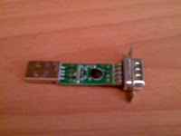

Para inaugurar este blog he elegido un proyecto muy sencillo y muy práctico. Se trata de adaptar un barato conversor de 2€ para poder comunicarnos con un microcontrolador. Es útil en caso de que vuestro PC no tenga puerto serie y sólo tenga puertos USB, o si lo tiene generalmente está poco accesible en la parte de atrás de la torre.
En esta ocasión no se trata de diseñar y construir nuestro conversor, porque por el precio que tiene no merece la pena el tiempo que invertiríamos. Además necesitaríamos cierta práctica trabajando con SMD. Hay conversores de varios precios, el más barato que he visto está en Dealextreme. Una vez desmontado podéis verlo en esta foto. Disculpad la calidad.

Está basado en el popular PL2303 de Prolific. Descripción y datasheet aqui. Sin embargo para reducir el precio no integra un PL2303 "de verdad" sino que está integrado en la misma placa.
Para conectar un microcontrador al PC habitualmente usaremos sólo las lineas Rx, Tx y GND. Dejando de lado las demás. No obstante nos interesará que esas líneas no queden en el aire, de lo contrario algunos programas podrían no funcionar. Para evitarlo haremos una conexión null modem con falso handshake como se indica aquí:
La imagen está tomada de esta web, donde se detallan los pros y los contras de cada conexionado.
Recomiendo eliminar las clavijas DB9 y USB y sustituirlas por sendos cables. Eliminar el conector USB es sencillo. Para extraer el DB9 quizá tengáis que serrar los pines, porque están soldados por ambos lados. Para terminar, un poco de retráctil evitará que toquemos con la placa en sitios delicados.
{kind=link}
Notas adicionales:
- La calidad del dispositivo deja mucho que desear, pero para el uso que queremos darle es suficiente.
- Si al conectarlo al PC aparece un mensaje de que el USB es defectuoso (en windows), o diversos errores en /var/log/syslog (en linux) es debido a que el oscilador es inestable. Una resistencia de 100k en paralelo con el cristal debería arreglarlo.
- Los drivers de windows son muy quisquillosos. En linux funcionó a la primera, mientras que en windows tuve que tirarme dos tardes instalando varias versiones del driver y sólo he conseguido que funcione en un único puerto USB. Si lo conecto a otro lo reconoce pero no transmite ni recibe nada.
- Para probarlo recomiendo la aplicación gtkterm.